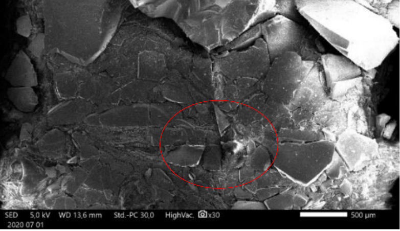
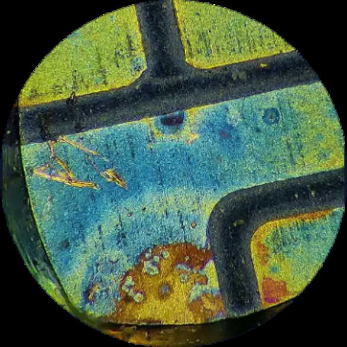

Micro-crack·Internal Crack 원인분석
냉각 조건 최적화로 열응력 450→80MPa 저감
HBM 웨이퍼·다이의 초박형화(~50μm)로 Wafer Dicing 과정에서 Micro-crack·Internal Crack 위험이 커지는 문제를 기계적·열적 요인으로 나눠 분석했습니다. 절삭열 축적이 파단강도를 넘어서는 조건을 열응력 식으로 규명하고, 냉각 조건 최적화로 가공 국소 피크온도를 950℃에서 170℃로, 열응력을 450MPa에서 80MPa로 낮췄습니다.
개요
AI 반도체 수요 증가에 따라 HBM·3D 패키징의 고단 적층이 확대되면서, 제한된 패키지 높이에 더 많은 다이를 쌓기 위해 웨이퍼·다이가 초박형화되고 있습니다. 최근 HBM 웨이퍼는 약 50μm 수준까지 박형화되어 일반적인 스카치테이프 두께(60~70μm)보다도 얇고, Die-to-Wafer 첨단 패키징에서는 다이 두께가 30μm 수준까지 접근합니다. 이렇게 기계적 강성과 파단 여유가 줄어든 초박형 다이는 연삭·절단·이송 과정에서 발생하는 작은 응력에도 쉽게 손상되어 Micro-crack·Internal Crack이 발생·성장할 위험이 커집니다.
발생 메커니즘과 진단법
| 계측장비 | 검사 원리 | 역할 |
|---|---|---|
| AOI | 표면 반사광의 명암과 형상 차이 분석 | 양산에서 의심 Die를 빠르게 선별 |
| Optical Microscope | 가시광선의 반사·산란 변화 관찰 | Die Edge와 표면 Crack 확대 확인 |
| SEM | 전자빔과 2차전자 신호를 이용한 표면 영상 | 미세 Crack의 형상과 전파 방향 정밀 분석 |
| IR Inspection | 실리콘을 투과한 적외선의 산란·반사 변화 검출 | Si Die 내부 Crack을 비파괴적으로 확인 |
| C-SAM | 내부 경계면에서 반사되는 초음파 Echo 분석 | Crack·Delamination·Void의 위치와 깊이 확인 |
| X-ray CT | 재료의 X-ray 투과량 차이를 영상화 | 내부 결함의 위치와 3차원 형상 분석 |
| FIB-SEM | FIB로 단면을 가공하고 SEM으로 관찰 | 의심 Crack의 최종 확정 및 발생 기점 분석 |
Micro-crack은 양산 선별(AOI) → 상세 확인(광학현미경) → 원인분석(SEM) 순으로, Internal Crack은 비파괴 선별(IR 또는 C-SAM) → 필요 시 X-ray CT → 최종 확정(FIB-SEM) 순으로 판별합니다.
Micro Crack 판별 순서 — Wafer Saw 완료 (Die Edge·Kerf·Sidewall 부근에 미세균열 발생 가능) → 세정 및 건조(DI Water·파티클 제거, 오염물로 인한 오판 방지) → AOI 외관검사(이상 반사영역·Edge 끊김을 Crack 의심부로 검출) → 광학현미경 확대관찰(산란으로 나타나는 어두운 선·명암차 확인) → SEM 정밀 확인(균열 시작점·길이·폭·전파방향 분석) → 최종 판정(표면·Edge·Sidewall과 연결되어 직접 관찰됨).
Internal Crack 판별 순서 — Wafer Saw 완료(절삭력·잔류응력으로 내부에 균열 생성 가능) → 세정 및 건조(수분·파티클 제거, 비파괴검사 오검출 최소화) → 외관검사(표면 정상 + 후공정 파손 반복 시 내부 Crack 의심) → IR/C-SAM 비파괴검사(적외선 산란·반사 또는 초음파 Echo 신호 검출) → 위치· 깊이 분석(신호 좌표·도달시간으로 위치·깊이·범위 추정) → 단면 분석(절단·연마 또는 FIB 가공 후 SEM으로 직접 확인) → 최종 판정(표면 미노출 + 재료 내부에서 균열 확인됨).

기계적 요인
- 런아웃 진동 & 속도 과다(절삭조건 불량) — 스핀들 런아웃 및 이송속도 상승 시 칼날이 진동하거나 빠르게 지나가며 가공면을 강하게 타격합니다. 임계 칩 두께를 초과하면 부드럽게 깎이는 연성 영역을 벗어나 표면이 깨지며 횡방향 Micro-crack이 발생합니다(취성 파괴 전환)
- 공구 마모 & 수직 압축력 — 다이아몬드 날 마모(Glazing 현상)로 날이 재료를 정상적으로 깎지 못하고 억지로 짓누르면, 수직 하중이 집중돼 표면은 멀쩡해 보여도 하부 깊은 곳으로 수직 Internal Crack이 형성됩니다
- 웨이퍼 박막화 & 계면응력 — 초박판 웨이퍼(<50μm)·Low-k 구조는 웨이퍼가 얇아질수록 절삭 충격을 견디는 자체 강성이 급격히 저하되고, 비대칭 전단 응력 및 잔류 응력이 내부로 누적되며 표면 스크래치와 내부 수평/수직 균열로 복합 진전됩니다
실효 칩 두께는 이송 속도(vf)·스핀들 회전수(RPM, n)·유효 입자 수(Z)· 런아웃 오차(δr)의 함수로 표현되고, 헐츠 접촉 압력(p₀)·침투 깊이(cm)는 수직 압축하중(Fz)·다이아몬드 입자 곡률 반경(R)·실리콘 파괴 인성치(K IC)·실리콘 탄성계수·경도(E, H)로 정량화됩니다 — AOI로는 보이지 않는 Internal Crack의 침투 깊이를 정량적으로 파악하기 위한 수식입니다. Glazing 발생 시 수직 짓눌림 하중(p₀)이 증가하면 하중 증가에 따라 내부 균열 깊이(cm)가 크게 깊어지고, 초박판 웨이퍼(<50μm)는 절삭 충격 흡수 강성이 저하돼 내부 인장 응력이 잔존하면서 표면에서 보이지 않는 결함이 후공정(패키징) 단계 다이 파손으로 이어질 수 있습니다.
열적 요인
냉각이 불충분하면 절삭 계면에서 국부적 열구배(ΔT)가 형성되고, 이때 발생하는
열응력 σ = EαΔT/(1−ν)가 실리콘 파단강도(약 100~500MPa)를 넘으면
Crack이 개시됩니다. 세 가지 열적 변수를 분석했습니다.
- 절삭열 축적 — 냉각이 불충분하면 절삭계면에서 국부적 열구배가 형성되고, 열응력이 파단강도를 넘으면 Crack이 개시됩니다
- DI Water 냉각 부족 — 냉각수 유량·분사각이 부적절하면 열 손상뿐 아니라 블레이드 Glazing까지 유발해 절삭저항이 증가합니다. 초박형(<100μm) 웨이퍼는 Feed Rate를 10~25mm/s로 낮춰 열 축적 시간을 최소화해야 합니다
- 스핀들 RPM 상승 — 표준 실리콘 다이싱은 30,000~60,000 RPM(선속도 83~175 m/s)에서 운용되는데, 절삭 선속도가 오르면 표면 균열은 줄어도 초당 마찰 횟수 급증으로 열에너지가 축적되어 결정면(111면)을 따라 내부 균열이 생성될 수 있습니다
- 레이저 파라미터 오조준 — 정상 조건에서 개질층은 1회 스캔 기준 높이 40~50μm·깊이 5~8μm로 형성되는데, 레이저 출력 과다·펄스 중첩 과도 시 이 범위를 넘는 열영향부(HAZ)가 형성되어 강도가 저하됩니다
해결 방안
기계적 요인 해결책
- Multi-Pass Step Dicing — 100μm 두께 실리콘 웨이퍼를 1회 단일 패스로 절단 시 수직 압력 하중이 2.4N까지 치솟으며 하부 균열 침투 깊이가 14.5μm에 달하는 상황에서, Z축 절입 깊이를 1차 70μm(70%)·2차 30μm(30%)로 2-step 분할 절단해 실효 미절삭 칩 두께를 줄이고 수직 하중과 하부 균열 침투 깊이를 완화
- Soft-Medium Resin Bond + #3000 Grit 공구 — Hard Metal Bond(#2000 Grit) 사용 시 날 자생 작용 미흡으로 수직 반력 고하중이 지속돼 하부 균열이 진전되는 상황에서, 결합재를 Soft-Medium Resin Bond로, 지립 입경을 #3000 Grit(3~4μm) 이상으로 교체해 입자의 Self-sharpening을 유도, 수직 압축 하중 상한선을 고정하고 하부 수평 균열을 감소
- Dynamic Spindle Runout Control — 스핀들 동적 런아웃 오차 발생 시 공구가 웨이퍼 표면을 비주기적으로 충격 타격해 응력 집중 계수가 폭증하는 상황에서, Air-bearing Spindle 정밀 튜닝 및 동적 밸런싱으로 런아웃 오차를 제어해 불규칙 파쇄와 하부 Micro-crack 발생을 완화
- Wafer Height Mapping — 공정 후 웨이퍼 휨이 40μm 이상 발생한 상태로 가공 시 국소 구역에서 과도한 절입으로 수직 압축 하중이 국소 증가하는 상황에서, 가공 전 비접촉 레이저 센서로 웨이퍼 전면 고저차를 측정하고 1μm 단위 Z축 오프셋을 실시간 연동해 국소 수직 하중 편차를 절감
열적 요인 해결책
이송속도 Vf≥60mm/s·RPM 40,000 이상 고속 가공 시 가공 국소 온도가 950℃ 이상 상승하고 열응력은 450MPa까지 형성되어 하부 10μm 이상의 Thermal Internal Crack이 발생하는 상황에서, DI Water 정밀 공급 온도를 낮추고 분사 압력을 상향한 결과 대류 전달 계수(h)가 상승해 가공 국소 피크 온도가 170℃ 이하로, 열응력도 80MPa 수준으로 완화되었습니다.
또한 누적 가공거리 800m 초과 시 발생하는 공구 Glazing 현상(마찰계수 급증 → 마찰열 발산량 상승)에 대해서는, 누적 가공거리 500m 주기마다 SiC Dressing Board를 0.5초간 자동 통과시켜 Self-sharpening을 유도하는 In-line Auto Dressing 주기 최적화로 마찰 계수를 상시 유지해 가공열 발산량을 65% 절감했습니다.

Trade-off
한 요인의 해결책이 다른 요인에 부작용을 만들 수 있어 팀원들과 교차 검토했습니다.
| 구분 | 적용 솔루션(원 목적) | 긍정 효과 | 부작용 | 현장 최적 타협점 |
|---|---|---|---|---|
| 열적 → 기계 | DI Water 고압/대량 분사(열적 해결책) | 대류 열전달 극대화로 가공 피크 온도 급감 950℃→170℃ | 초박판 웨이퍼가 수압 타격을 받아 수평 떨림 발생 → 표면 Edge Chipping 및 미세 파쇄 유발 | 노즐 분사각을 45도로 정밀 조정해 수직 수압 타격력을 분산 |
| 기계 → 열적 | Multi-Pass Step Dicing(기계적 해결책) | 2회 분할 절단으로 수직 하중 감소 및 연성 가공 유도 | 동일 라인을 2회 통과해 공구 마찰 접촉 시간이 증가 → 절삭 부위 총 마찰열 누적량 증가 | Step Dicing 수행 시 DI Water 정밀 냉각 유량을 1.2배 늘려 누적열 상쇄 |
| 기계 → 열적 | 미세 Grit(#3000 이상)(기계적 해결책) | 다이아몬드 입자 크기를 줄여 표면 타격 충격력 극소화 | 공구 포켓이 협소해져 실리콘 분진에 의한 Blade Loading(메끔) 가속 → 급격한 마찰열 발생 | #3000 입경과 Soft-Medium Resin Bond를 조합해 포켓 공간과 자생 작용 동시 확보 |
기술적 대안 검토
- 레이저 다이싱(Laser Dicing) — 레이저의 높은 에너지를 표면에 집중시켜 실리콘을 기화시키는 비접촉식 표면 가공. 블레이드 마찰이 없어 기계적 스트레스를 대부분 차단하며, 초단펄스(Femtosecond) 레이저로 열 확산 시간을 최소화해 열로 인한 Internal Crack을 어느 정도 억제
- 스텔스 다이싱(Stealth Dicing) — 투과형 레이저를 웨이퍼 내부에 집광해 칩을 쪼개는 내부 개질층 유도 절단 공정. 절단 칩(Chipping)이 튀지 않아 표면 크랙이 제로화되고 다이 강도가 블레이드 대비 현저히 높음. 정확한 Focal Depth와 Multi-pass로 내부 균열이 칩 바깥(표면)으로만 진행하도록 통제
- 워터젯 다이싱(Water Jet Dicing) — 가느다란 고압 물줄기 내부에 레이저 빔을 전반사시켜 가이딩하는 기술. 레이저 컷팅과 동시에 물줄기가 즉각 열을 식혀줘(극강의 Cooling 효과) 열영향부(HAZ) 생성을 차단, Thermal Stress로 인한 Internal Crack 발생률을 0에 가깝게 만듦
- 플라즈마 다이싱(Plasma Dicing) — 반도체 식각(Dry Etching) 공정에 사용되는 화학적 플라즈마로 웨이퍼를 절단하는 기술. 물리적 마찰과 국부적 열 충격파가 거의 없는 Stress Free 공정으로, 칩 측면이 거울처럼 매끄럽게 가공되어 초박막(Ultra-thin) 웨이퍼 수율 확보에 필수적인 솔루션
기업 대응방안 사례 조사
Crack은 Dicing부터 Tape-and-reel, Pick-and-place, 최종 SMT까지 어디서든 발생할 수 있어 검사 지점을 늘리는 것만으로는 발생 지점을 다 덮을 수 없다는 점에 주목해, 검사 강화보다 공정 변화에 초점을 둔 업계 대응 사례를 조사했습니다. 얇고 작은 WLCSP의 Die Corner Stress·Chipping·Die Crack은 제조 중 즉시 고장을 일으키기도 하지만, 출하 후 온도 변화와 기계적 사용 하중으로 성장해 고장을 일으키기도 합니다.
UTAC — 대응 방안의 3단계 진화
- Post-saw 검사 강화 — Sawing 후 Die 및 Sidewall 검사, Die 윗면 포함 5-side Inspection
- Sawing 방식 전환 — Laser Scribe 또는 Laser Dicing, Backside Wafer Film Lamination
- 구조 설계로 방어 — Die Sidewall Mold Encapsulation, 선택적 Backside Protection Film
Amkor — 자동차용 반도체의 Crack 대응
자동차용 패키지는 사실상 Zero Defect 관점입니다 — 불량률을 낮추는 문제가 아니라 사고를 만들지 않는 문제로 접근합니다. 품질의 정의는 "고객에게 발생한 품질 사고의 개수"이고, 판정의 시점은 초기 검사가 아니라 Temperature Cycle·Thermal Shock·HAST 같은 가속 스트레스 이후의 변화이며, 판정 기준은 "No Package Crack"입니다. 대응의 범위도 Unit Level Traceability로 장비·재료·조건을 역추적해 FMEA·Control Plan을 재검토하고 MRB/SCAR를 발행해 공장 간 BKM을 전개하는 등, 원인 제거와 영향 범위 확정까지 포괄합니다.
배운 점
- 열응력 식(σ=EαΔT/(1−ν))처럼 하나의 물리 법칙으로 "왜 냉각이 부족하면 균열이 생기는지"를 정량적으로 설명할 수 있다는 것을 배웠고, 개선방안(DI Water 온도·압력 조정)의 효과를 950℃→170℃, 450MPa→80MPa처럼 구체적 수치로 검증하는 접근을 익혔습니다
- 한 요인(열적)의 해결책이 다른 요인(기계적)에 부작용을 만들 수 있다는 Trade-off 관계를 팀원들과 교차 검토하면서, 공정 개선은 단일 변수 최적화가 아니라 여러 요인 간 균형점을 찾는 문제라는 것을 체감했습니다
- 검사를 강화하는 것만으로는 다이싱부터 SMT까지 이어지는 모든 발생 지점을 커버할 수 없다는 업계 사례를 보며, 근본적인 개선은 검출이 아니라 공정 자체의 결함 발생률을 낮추는 방향이어야 한다는 것을 배웠습니다